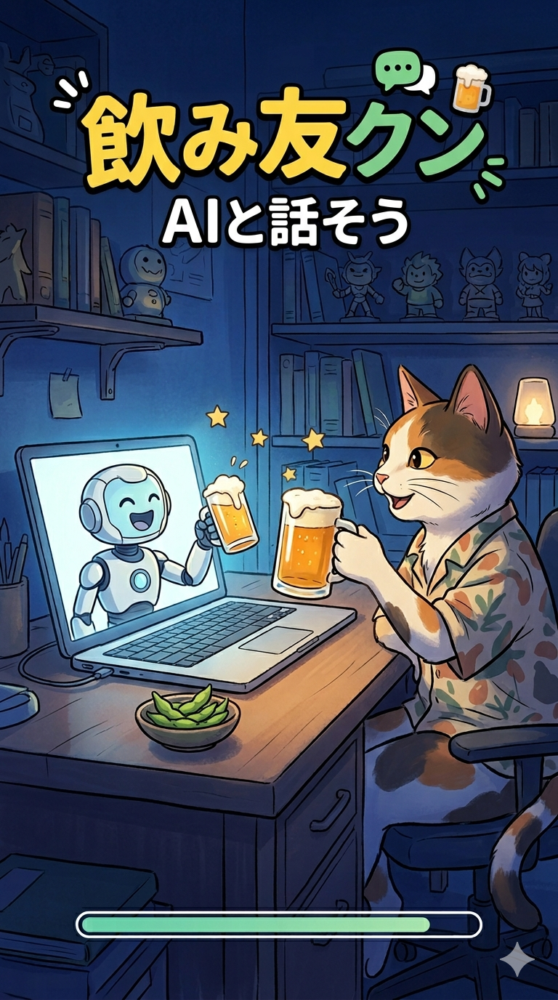
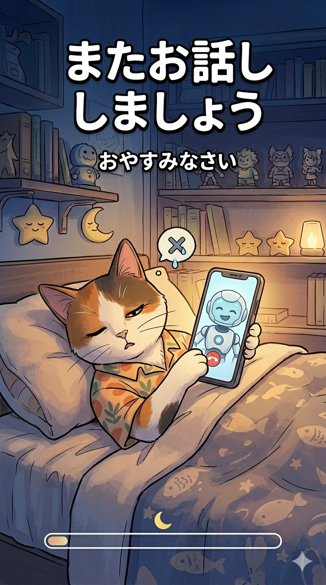
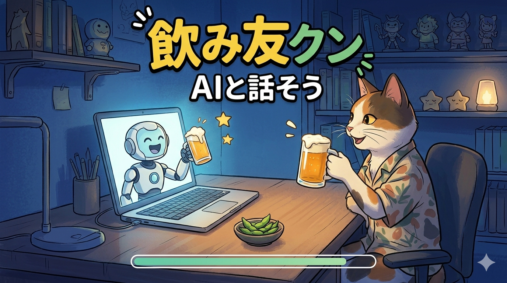
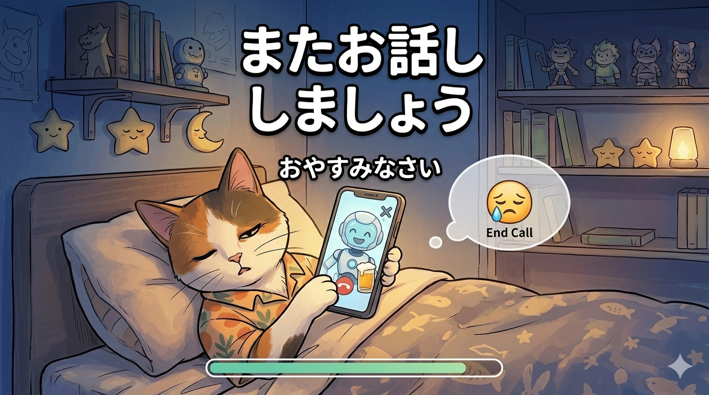

A smartphone app for casual conversations with AI.
Your companion for solo drinks, your confidant on sleepless nights.
AIと気軽に会話できるスマートフォンアプリです。
一人呑みのお供に、眠れない夜のお話し相手に。




飲み友クンは、AIとの自然な会話を楽しめるスマートフォンアプリです。
話しかけるだけで、AIが優しく応答します。
一人の時間をもっと豊かに。